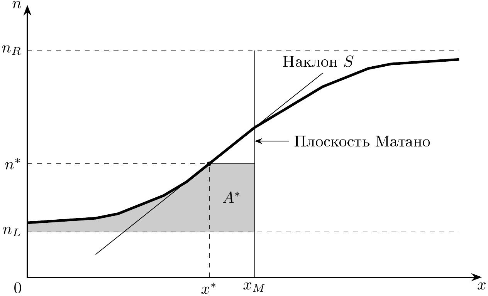
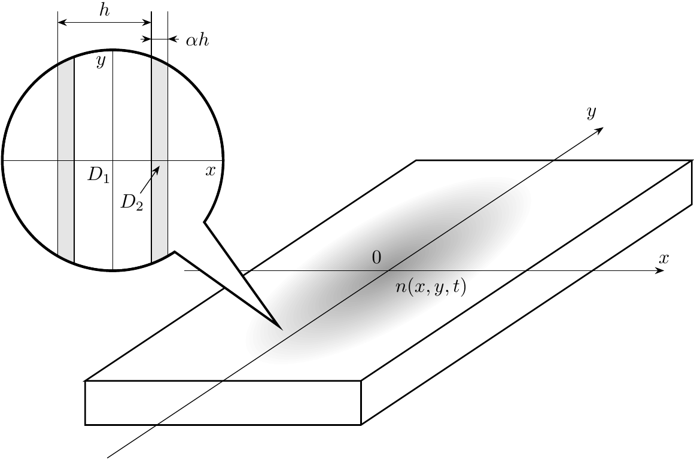
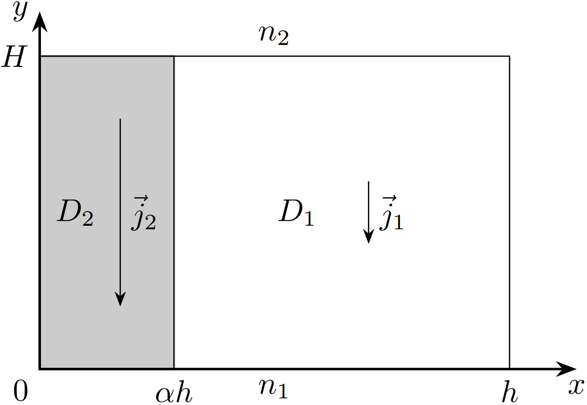
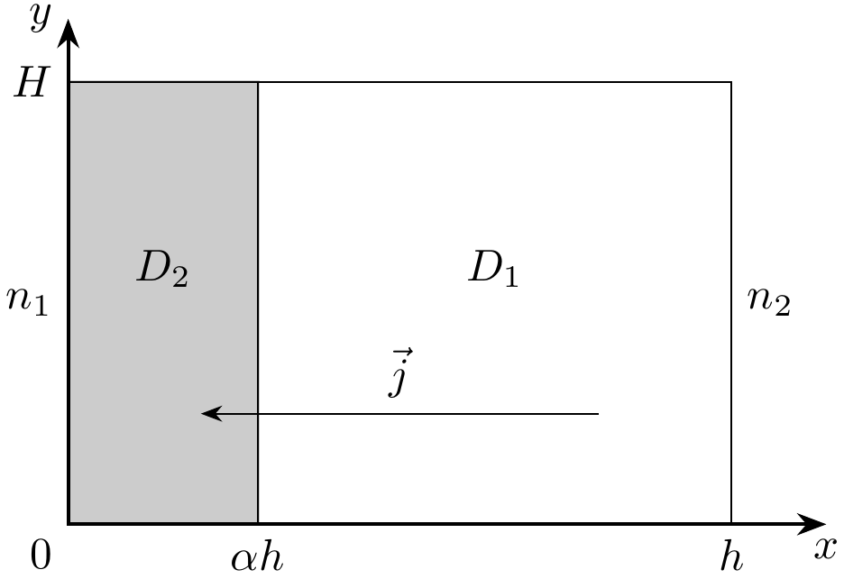

X24 (2024) — English translation
Diffusion (Latin diffusio “spreading, spreading, scattering; interaction”) is a nonequilibrium process of movement (molecules and atoms in gases, ions in plasma, electrons in semiconductors, etc.) of a substance from an area of high concentration to an area of low concentration, leading to spontaneous equalization of concentrations throughout the occupied volume. Diffusion processes are described by Fick's laws. Fick's first law states that in a one-dimensional system with a concentration gradient of a substance $\mathrm dn{/}\mathrm dx$, the flux of substance $j$ caused by diffusion is determined by the equality: \[j=-D\cdot\mathrm dn{/}\mathrm dx,\]where $D$ is the so-called diffusion coefficient. Its dimension is $[D]=м^2/с$. Fick's second law states that in a one-dimensional system with a concentration gradient of a substance $\mathrm dn{/}\mathrm dx$ the rate of change in the concentration of a substance at a given point, due to diffusion, is determined by the equality: \[\frac{\partial}{\partial t}n=\frac{\partial}{\partial x}\left[D\frac{\partial n}{\partial x}\right].\] Usually, when solving Olympiad problems, diffusion is considered one-dimensional, homogeneous and isotropic, but this model is too simple. In this problem, two more specific diffusion models will be considered, covering a fairly wide class of real-life problems. In particular, Part A will look at interdiffusion, in which the diffusion coefficient $D$ depends on the concentration of one of the substances. Part B will look at anisotropic transient diffusion in nanostructures.
Diffusion processes are described by Fick's laws.
Fick's first law states that in a one-dimensional system with a concentration gradient of a substance $\mathrm dn{/}\mathrm dx$, the flux of substance $j$ caused by diffusion is determined by the equality: \[j=-D\cdot\mathrm dn{/}\mathrm dx,\]where $D$ is the so-called diffusion coefficient. Its dimension is $[D]=м^2/с$.
Fick's second law states that in a one-dimensional system with a concentration gradient of a substance $\mathrm dn{/}\mathrm dx$ the rate of change in the concentration of a substance at a given point, due to diffusion, is determined by the equality: \[\frac{\partial}{\partial t}n=\frac{\partial}{\partial x}\left[D\frac{\partial n}{\partial x}\right].\]
Usually, when solving Olympiad problems, diffusion is considered one-dimensional, homogeneous and isotropic, but this model is too simple. In this problem, two more specific diffusion models will be considered, covering a fairly wide class of real-life problems. In particular, Part A will look at interdiffusion, in which the diffusion coefficient $D$ depends on the concentration of one of the substances. Part B will look at anisotropic transient diffusion in nanostructures.
Let us consider a mixture of two substances that can mutually penetrate each other due to diffusion. This phenomenon is called mutual diffusion. In general, the coefficient of mutual diffusion depends on the concentration of one of the substances at a given point. In this case, Fick's law will be written in the form: \[\frac{\partial}{\partial t}n=\frac{\partial}{\partial x}\left[D(n)\frac{\partial n}{\partial x}\right].\]Surprisingly, this equation has a simple and elegant solution method! In 1894 the famous scientist Ludwig Boltzmann showed that by transforming $\eta=(x-x_M)/2\sqrt t$ (here $x_M$ is a quantity that will be determined later) the equation can be reduced to the form: \[-2\eta\frac{\mathrm dn}{\mathrm d\eta}=\frac{\mathrm d}{\mathrm d\eta}\left[D(n)\frac{\mathrm dn}{\mathrm d\eta}\right],\] and also developed a method for solving this equation. In particular, when solving the problem of contact of two materials with initial concentrations $n_L$ at $x < 0$ and $n_R$ at $x > 0$, integration of the resulting equation gives: \[-2\int\limits_{n_L}^{n^*}\eta~\mathrm dn=D(n^*)\cdot(\mathrm dn{/}\mathrm d\eta)|_{n^*}-D(n_L)\cdot(\mathrm dn{/}\mathrm d\eta)|_{n_L}\implies D(n^*)=-\frac2{(\mathrm dn{/}\mathrm dx)|_{n=n^*}}\int\limits_{n_L}^{n^*}\eta~\mathrm dn\]\[\implies D(n^*)=-\frac1{2t(\mathrm dn{/}\mathrm dx)|_{n^*}}\int\limits_{n_L}^{n^*}(x-x_M)~\mathrm dn.\]This relationship is called the Boltzmann–Matano equation. It allows you to determine $D$ for any $n^*$ from the experimental concentration profile. All that remains is to find the value $x_M$ – the position of the so-called. Matano plane. It is easy to see that:\[\int\limits_{n_L}^{n_R}\eta~\mathrm dn=0\implies\int\limits_{n_L}^{n(x_M)}(x-x_M)~\mathrm dn+\int\limits_{n(x_M)}^{n_R}(x-x_M)~\mathrm dn=0.\]Thus, the value of $x_M$ can be found by solving the resulting integral equation with the available experimental data.
In 1894 the famous scientist Ludwig Boltzmann showed that by transforming $\eta=(x-x_M)/2\sqrt t$ (here $x_M$ is a quantity that will be determined later) the equation can be reduced to the form: \[-2\eta\frac{\mathrm dn}{\mathrm d\eta}=\frac{\mathrm d}{\mathrm d\eta}\left[D(n)\frac{\mathrm dn}{\mathrm d\eta}\right],\] and also developed a method for solving this equation. In particular, when solving the problem of contact of two materials with initial concentrations $n_L$ at $x < 0$ and $n_R$ at $x > 0$, integrating the resulting equation gives: \[-2\int\limits_{n_L}^{n^*}\eta~\mathrm dn=D(n^*)\cdot(\mathrm dn{/}\mathrm d\eta)|_{n^*}-D(n_L)\cdot(\mathrm dn{/}\mathrm d\eta)|_{n_L}\implies D(n^*)=-\frac2{(\mathrm dn{/}\mathrm dx)|_{n=n^*}}\int\limits_{n_L}^{n^*}\eta~\mathrm dn\]\[\implies D(n^*)=-\frac1{2t(\mathrm dn{/}\mathrm dx)|_{n^*}}\int\limits_{n_L}^{n^*}(x-x_M)~\mathrm dn.\]This relationship is called the Boltzmann–Matano equation. It allows you to determine $D$ for any $n^*$ from the experimental concentration profile.
All that remains is to find the value $x_M$ – the position of the so-called. Matano plane. It is easy to see that:\[\int\limits_{n_L}^{n_R}\eta~\mathrm dn=0\implies\int\limits_{n_L}^{n(x_M)}(x-x_M)~\mathrm dn+\int\limits_{n(x_M)}^{n_R}(x-x_M)~\mathrm dn=0.\]Thus, the value of $x_M$ can be found by solving the resulting integral equation with the available experimental data.

So, to determine the mutual diffusion coefficient from the experimental concentration profile by the Boltzmann–Matano method, it is required: Determine the position of the Matano plane $x_M$ from the integral equation above. Select $n^*$ and determine the integral \[A^*=\int\limits_{n_L}^{n^*} (x_M-x)~ \mathrm d n\quad\text{либо}\quad A^*=\int\limits_{n^*}^{n_R} (x-x_M)~ \mathrm d n\] from the experimental dependences of concentration on distance. The integral corresponds to the shaded region $A^*$ in Fig. 1. Determine the concentration gradient \[S=\left.\cfrac{\mathrm d n}{ \mathrm d x}\right|_{n^*}.\]$S$ corresponds to the slope of the concentration versus distance curve at point $x^*$. Determine the mutual diffusion coefficient $D$ for $n=n^*$ from the Boltzmann–Matano equation as \[D\left(n^*/n_0\right)=\cfrac{A^*}{2 t S}.\] To obtain a concentration profile, a small number of “labeled” atoms are first applied to the contact boundary of the materials. Usually these are radioactive isotopes of the substance being studied, from the emission of which the concentration at a given point can be estimated. The problem considers the case when two materials are brought into contact in the $x=0$ plane. Initially, the concentration of the type of particles we are interested in is $n_0$ at $x>0$ and $0$ at $x<0$. The materials are then kept in contact for some time and the resulting concentration profile is then examined. The table in the answer sheet shows the concentration profiles obtained for time $0.01~года$ and $0.02~года$, respectively. The results obtained from each profile will not be entirely accurate. In the first profile, the result is influenced by the nonideality of the initial concentration distribution. In the second profile, this imperfection is leveled out by the exposure time, but effects associated with the final dimensions of the sample and the influence of its boundaries begin to play a role. To obtain maximum accuracy, it is suggested to average the result at the end.
To obtain a concentration profile, a small number of “labeled” atoms are first applied to the contact interface of the materials. Usually these are radioactive isotopes of the substance being studied, from the emission of which the concentration at a given point can be estimated.
The problem considers the case when two materials are brought into contact in the $x=0$ plane. Initially, the concentration of the type of particles we are interested in is $n_0$ at $x>0$ and $0$ at $x<0$. The materials are then kept in contact for some time and the resulting concentration profile is then examined.
The table in the answer sheet shows the concentration profiles obtained for time $0.01~года$ and $0.02~года$, respectively. The results obtained from each profile will not be entirely accurate. In the first profile, the result is influenced by the nonideality of the initial concentration distribution. In the second profile, this imperfection is leveled out by the exposure time, but effects associated with the final dimensions of the sample and the influence of its boundaries begin to play a role. To obtain maximum accuracy, it is suggested to average the result at the end.
Note. Intuitively, it may seem that the Matano plane should be at the origin (where the “labeled” atoms were originally located), but in reality this may not be true. This phenomenon is called the Kirkendall effect. It is a consequence of the dependence of the mutual diffusion coefficient on the concentration of the substance.
Given the obtained value of $x_M$, indicate explicitly whether the Kirkendall effect should be taken into account in further calculations.
If you are unable to solve this item, then count $x_M=0$.
Note. To calculate the integral, you can use the trapezoidal method. If you need to calculate the integral $\int_{x_0}^{x_0+Nh}f(x)~\mathrm dx$ of a function that is given in a table in the form $f(x_0+nh)=f_n$, you can calculate it with good accuracy using the formula: \[\int_{x_0}^{x_0+Nh}f(x)~\mathrm dx=h\cdot\frac{f(x_0)+f(x_0+Nh)}2+h\cdot\sum_{n=1}^{N-1}f(x_0+nh).\]
Note. Experimental data are often noisy, so it is impossible to numerically calculate derivatives at neighboring points. In this case, you can use the formula: \[f'(x)=\frac{f(x+h)-f(x-h)}{2h}.\]
Note. In the large range $n$ the values will be very close to the results of A4, but near $n=0$ and $n_0$ noticeable discrepancies are possible. This is due to large relative errors in the calculation of derivatives and integrals in the “tails” of the profile. Areas of noticeable discrepancy $D(n/n_0)$ can be ignored during further graphic processing.
Let's try to find out why the mutual diffusion coefficient $D$ depends on concentration. In order of magnitude, it can be estimated as $D\sim l v$, where $v$ is the speed of particle movement (depending only on temperature), and $l$ is the so-called mean free path (the characteristic distance that a particle travels between successive collisions). The reciprocal of the mean free path is estimated as $1/l\sim\sigma n$, where $n$ is the concentration of particles in the substance, and $\sigma$ is the cross-sectional area of the particles. This quantity is expected to be additive if the substance consists of particles of different types. Thus, in general, the interdiffusion coefficient should behave as $D=1/(a+b\cdot n/n_0)$, where $a$ and $b$ are some positive coefficients. The next paragraph is devoted to finding these coefficients.
Thus, in general, the interdiffusion coefficient should behave as $D=1/(a+b\cdot n/n_0)$, where $a$ and $b$ are some positive coefficients. The next paragraph is devoted to finding these coefficients.
The $D(n/n_0)$ dependence obtained in this way can tell material theorists a lot about the internal structure of a substance and the interaction of its atoms.
Diffusion can be not only one-dimensional. In the simplest case of two-dimensional diffusion, Fick’s second law is modified and takes the form:\[\frac{\partial}{\partial t}n=D\left[\frac{\partial^2}{\partial x^2}+\frac{\partial^2}{\partial y^2}\right]n.\]As you can see, in such a diffusion model there is no preferred direction, i.e. it is isotropic. However, in general this is not the case. This can be taken into account by making the diffusion coefficient different along different axes: \[\frac{\partial}{\partial t}n=\left[D_x\frac{\partial^2}{\partial x^2}+D_y\frac{\partial^2}{\partial y^2}\right]n.\]This is how diffusion occurs, for example, in some nanostructured materials. Let us consider a thin slice of the nanostructure shown in Fig. 2. This “layered” structure consists predominantly of substance 1, which, with a small step $h$, alternates with layers of substance 2. Substance 2 occupies part $\alpha$ of the total volume of the nanostructure. Diffusion in substances 1 and 2 separately occurs isotropically. However, in the described nanostructure on scales $\gg h$, diffusion occurs anisotropically, i.e. as if the diffusion coefficients along the $x$ axis and along the $y$ axis are different. This property can be used to study the properties of nanostructures and control their quality. In this part of the problem we will consider the diffusion of some substance in a two-dimensional layered nanostructure.
Let us consider a thin slice of the nanostructure shown in Fig. 2. This “layered” structure consists predominantly of substance 1, which, with a small step $h$, alternates with layers of substance 2. Substance 2 occupies part $\alpha$ of the total volume of the nanostructure. Diffusion in substances 1 and 2 separately occurs isotropically. However, in the described nanostructure on the $\gg h$ scale, diffusion occurs anisotropically, i.e. as if the diffusion coefficients along the $x$ axis and along the $y$ axis are different. This property can be used to study the properties of nanostructures and control their quality.
In this part of the problem we will consider the diffusion of some substance in a two-dimensional layered nanostructure.

Having written Fick's first law, it is easy to show that the effective diffusion coefficient of the described “layered” structure in the direction parallel to the plane of the layers (Fig. 3) is equal to \[D_\|=D_1\cdot\left[(1-\alpha)+\alpha\cdot D_2{/}D_1\right].\] Fig. 3
Having written Fick's first law, it is easy to show that the effective diffusion coefficient of the described “layered” structure in the direction parallel to the plane of the layers (Fig. 3) is equal to \[D_\|=D_1\cdot\left[(1-\alpha)+\alpha\cdot D_2{/}D_1\right].\]

Similarly, by writing Fick's first law, it is easy to show that the effective diffusion coefficient of the described “layered” structure in the direction perpendicular to the plane of the layers (Fig. 4) is equal to \[D_\perp=D_1\cdot \frac{D_2{/}D_1}{\alpha+(1-\alpha)\cdot D_2{/}D_1}.\] Fig. 4
Similarly, having written Fick’s first law, it is easy to show that the effective diffusion coefficient of the described “layered” structure in the direction perpendicular to the plane of the layers (Fig. 4) is equal to \[D_\perp=D_1\cdot \frac{D_2{/}D_1}{\alpha+(1-\alpha)\cdot D_2{/}D_1}.\]

Let us now consider the problem of non-stationary diffusion in such a nanostructure. In the case when the diffusion coefficient along the $x$ axis is $D_x$, and along the $y$ axis - $D_y$, any initial distribution, localized on scales $a$ near the origin of coordinates, after a sufficiently large time $t\gg a^2/(D_x+D_y)$ will turn into the distribution: \[n(x,y,t)=\frac{N_0}{4\pi t\sqrt{D_xD_y}}\exp\left[-\frac{x^2}{4tD_x}-\frac{y^2}{4tD_y}\right].\]The answer sheets show a contour graph of the concentration $n(x,y)$ at different points in time. The contour plot is a family of lines of constant concentration with a step of $10\text%\cdot n(0,0)$, the areas between which are uniformly shaded with different shades of gray. The scale of the overlaid grid is unknown and is measured in arbitrary units ($у.е.$).
In the case when the diffusion coefficient along the $x$ axis is $D_x$, and along the $y$ axis - $D_y$, any initial distribution, localized on scales $a$ near the origin of coordinates, after a sufficiently large time $t\gg a^2/(D_x+D_y)$ will turn into the distribution: \[n(x,y,t)=\frac{N_0}{4\pi t\sqrt{D_xD_y}}\exp\left[-\frac{x^2}{4tD_x}-\frac{y^2}{4tD_y}\right].\]The answer sheets show a contour graph of the concentration $n(x,y)$ at different points in time.
The contour plot is a family of lines of constant concentration with a step size of $10\text%\cdot n(0,0)$, the areas between which are uniformly shaded in different shades of gray. The scale of the overlaid grid is unknown and is measured in arbitrary units ($у.е.$).
Note. We can assume that the fill factor is $\alpha<1/2$.
Source: https://pho.rs/p/3731